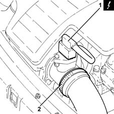
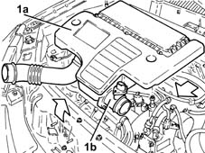
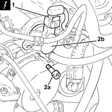
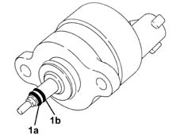

1060E50 Fuel pressure REGULATOR - R.R.
- Path
- Procedures > 10 ENGINE > 1060 DIESEL FUEL INJECTION > 1060E diesel pressure pump > 1060E50 Fuel pressure REGULATOR - R.R.
- Kind
- repair procedure (removal / refitting; the operation number is the code)
- Applies to
- engines: 1.3 JTD; all production periods
- Interactive page
- https://sloeber94.github.io/elrnDB-lYpsln/en/#/2429037
Applies to: engines: 1.3 JTD; all production periods
 Removing
Removing
 Refitting
RefittingEnsure that the ignition key is in OFF position, then disconnect the battery negative terminal (-).
 | Name | Connector |
|---|---|---|
- | Battery |
1. Disconnect the electrical connection from the air flow meter.
| Name | Connector |
|---|---|---|
1 | Air flow meter |
2. Loosen the band and disconnect the the turbocharger air inlet sleeve from the rigid pipe, air flow meter side.

Applies to: engines: 1.3 JTD; all production periods
1. Remove the air filter (1a) complete with air flow meter (1b) by releasing from the underlying pins and then from the rear fastenings.

Applies to: engines: 1.3 JTD; all production periods
1. Disconnect the electrical connection from the fuel pressure regulator.
| Name | Connector |
|---|---|---|
1 | Fuel pressure regulator |
Position something suitable under the regulator to collect any components which could drop during the stages which follow.
2. Undo the bolts (2a) securing the fuel pressure regulator (2b) to the single fuel manifold pipe.
Grip the outer casing of the regulator, partly extract it and, at the same time, turn it so that the fins in which the openings for the fixing bolts are located are positioned horizontally, then insert the blades of two screwdrivers by the fins and very carefully extract the pressure regulator.
Remove the gasket between pressure regulator and single fuel manifold pipe.

Applies to: engines: 1.3 JTD; all production periods
1. After removing the regulator, check that the high-pressure seal (1a) (black or green) and anti-extrusion sealing ring (1b) (white) are present.

Applies to: engines: 1.3 JTD; all production periods
Refitting
RemovingSuction off any impurities in the single fuel manifold pipe.
Before fitting, check the condition of the two sealing rings and make sure they are correctly positioned.
Lubricate the outer surface of the two seals for the pressure regulator using Vaseline.
Fit a new gasket between pressure regulator and single fuel manifold pipe.
Fit the pressure regulator in its seating, pressing gently and at the same time rotating the regulator until it is in contact with the surface of the single fuel manifold pipe.
Tighten to the specified torque the bolts securing the fuel pressure regulator to the single fuel manifold pipe.
 | Fastening | Component | Ø | Value (daNm) |
|---|---|---|---|---|
- | - | - | - | - |
Connect the electrical connection to the fuel pressure regulator.
Replace the air filter, complete with air flow meter, in its housing.
Connect the air intake sleeve to the turbocharger, air flow meter side, and tighten the band.
Connect the electrical connection to the air flow meter.
Connect the negative (-) battery terminal.